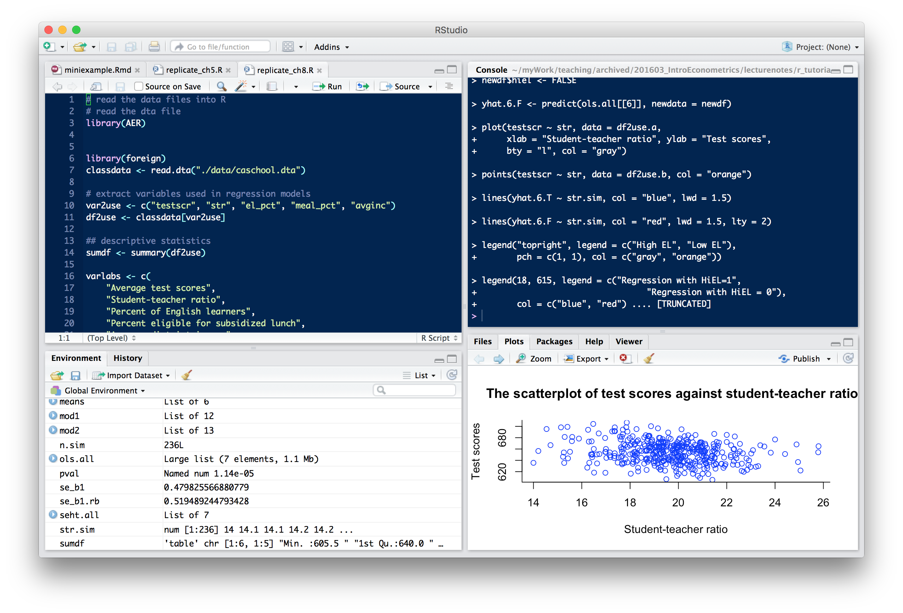
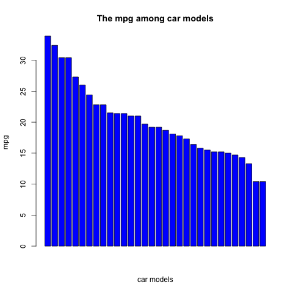
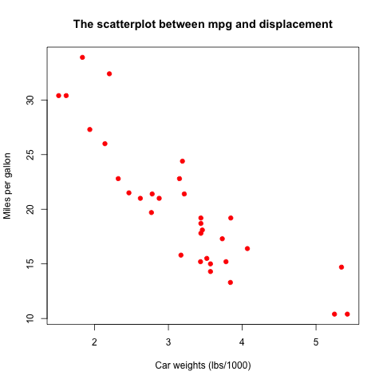

Lecture 5: An Introduction to R Empirical Exercise 3.1
Table of Contents
1 Getting Started with R
1.1 What is R?
R is a free software environment and programming language for statistical computing and graphics. The website for the R project is https://www.r-project.org/.
A brief history of development of R
- It originated from Bell Laboratories in the 1970s, as the S language, from which the commercial version S-Plus was developed in 1987.
- R was initially developed by Robert Gentleman and Ross Ihaka at the University of Auckland, New Zealand in 1996.
- Since its first release in 2000, the development of the R project has been tremendous in the last two decades.
Why do we choose R other than other econometric software?
- It is open source, free to download.
- It has a huge number of packages that can implement almost all state-of-art statistical techniques.
- It has a powerful and flexible capabilities of making graphs.
- It is a programming language designed specifically for statistics, enabling you to accomplish almost anything a programming language can do for statistics.
1.2 Installation
Install R
The installation files can be downloaded from https://mirrors.tuna.tsinghua.edu.cn/CRAN/. You can download the installation files for Windows, OS X, and Linux(ubuntu).
Install RStudio
The base R comes with a simple Graphic User Interface (GUI). RStudio supplies with a more user-friendly GUI and provides other powerful functionalities, such as writing dynamic documents with nitro and rmarkdown.
- RStudio can be downloaded from https://www.rstudio.com/products/rstudio/download/
The window of RStudio looks like Figure 1

Figure 1: The Window of RStudio
1.3 Packages
The R installation files install the core packages that support very basic functions. One of the strength of R is that there are many contributed packages written by the huge community of R users.
To install a contributed package, we use the command
install.packages("names of packages"). After installing a package,
we need to invoke it every time we use it by the command library(name
of a package). In this course, for example, we need to install a
package called AER (Applied Econometrics with R).
Type the following code in the "Console" window in RStudio.
# Install packages install.packages("AER")
Upon typing this command, a window jumps up for you to choose a
mirror. From the list, choose China[Beijing]. R will automatically
download and install this package from the server. Very likely, when
this is the first package you install in R, R will also download other
packages on which installing the AER package depends. In the
console, you should see the following messages.
trying URL 'https://mirrors.tuna.tsinghua.edu.cn/CRAN/bin/macosx/mavericks/contrib/3.3/AER_1.2-5.tgz' Content type 'application/octet-stream' length 2442603 bytes (2.3 MB) ================================================== downloaded 2.3 MB The downloaded binary packages are in /var/folders/rd/53x_sgqd3yj6wghsyyy4n0vh0000gn/T//RtmpF3tVDW/downloaded_packages
In RStudio, you can install packages from the "Tools" menu and click "Install Packages".
When we need to use the AER package, type library(AER) in the
console. And we can check whether this package is loaded using
search().
# Load packages library(AER) # Check packages loaded search()
[1] ".GlobalEnv" "package:AER" "package:survival" [4] "package:sandwich" "package:lmtest" "package:zoo" [7] "package:car" "package:foreign" "ESSR" [10] "package:stats" "package:graphics" "package:grDevices" [13] "package:utils" "package:datasets" "package:methods" [16] "Autoloads" "package:base"
It shows that besides the AER package, there are other packages
in the "global" environment, which are the core packages loaded
automatically when opening R.
1.4 Help
- R has easy helping facilities. The help information of any function
can be found by type either
help()or?. - If you cannot remember the accurate name of a function, you can even
guess by using
help.search()or??orapropos(). - Any time you encounter a problem using R which cannot be solved by
helpcommand, there are at least two places you can resort to.- The mailing list of R: http://www.r-project.org/mail.html
- Google or bing: quite often you will get an answer to your question in the website of http://stackoverflow.com/.
2 Basics
2.1 R as a calculator
Standard arithmetic operators
R supports the following arithmetic operators
+, -, *, /, ^, %%, %/%
Hence,
## R as a calculator ------------------------------ #+ Binary operations 1 + 2; 2*3; 2^3; 5/2; 5 %% 2 # get x mod y 5 %/% 2 # get the integer division
[1] 3 [1] 6 [1] 8 [1] 2.5 [1] 1 [1] 2
Mathematical functions
R also have many built-in mathematical functions, such as, log(),
exp(), sin(), sqrt(), min(), etc.
# Use built-in functions log(exp(sin(pi/2)^2) * exp(cos(pi/3)^2))
[1] 1.25
2.2 Vector operations
Vector is the basic unit in R, from which other data structures,
for example, matrix, factor, list, data.frame, are built upon.
Generate a vector
A vector can be generated by the function c(), which can also be
used to concatenate two vectors
## Vector operations ------------------------------ # Create a vector with c() x <- c(0.3, 1.5, 7.3, 2) y <- c(3, 2, 1) z <- c(x, y) z
[1] 0.3 1.5 7.3 2.0 3.0 2.0 1.0
The symbol <- is to assign a value to a variable. You can also use
= to assign values, but <- is more commonly used by convention and
= is used within a function calling for assigning values to the
arguments of the function.
Note that by concatenating x and y, integers are converted to
floating point numbers. That means the elements in a vector must have
the same mode (data types), including numeric, character, and
logical.
# Vectors with different data types student.names <- c("John", "Mary", "Bob", "Ann") student.male <- c(TRUE, FALSE, TRUE, FALSE) student.age <- c(20, 19, 21, 20) class(student.names) class(student.male) class(student.age) students <- c(student.names, student.male, student.age) students
[1] "character" [1] "logical" [1] "numeric" [1] "John" "Mary" "Bob" "Ann" "TRUE" "FALSE" "TRUE" "FALSE" "20" [10] "19" "21" "20"
Patterned vectors
A vector can also be generated by the functions, like rep(), seq(), and
:.
seq()generates a vector by some patterns anda:bis a shorthand forseq(from=a, to=b, by=1).# Create a sequence even <- seq(from = 2, to = 20, by = 2) even years <- 1995:2005 years
[1] 2 4 6 8 10 12 14 16 18 20 [1] 1995 1996 1997 1998 1999 2000 2001 2002 2003 2004 2005
rep()generates a vector by repeating some values# Create repetition ones <- rep(1, times = 10) ones rep13 <- rep(1:3, times = 3, each = 2) rep13
[1] 1 1 1 1 1 1 1 1 1 1 [1] 1 1 2 2 3 3 1 1 2 2 3 3 1 1 2 2 3 3
Vector operations
Arithmetic operators and mathematical functions can be applied to vector in an element-by-element way in R.
Let's first draw random numbers for the uniform distribution
\(x \sim Uniform(0, 1)\). The length of \(x\) is 10. We can use the
length() function to check the length of a vector.
# Draw a random vector x <- runif(10); x length(x)
[1] 0.14148308 0.51161683 0.38662609 0.69438119 0.72135122 0.32643191 [7] 0.04846838 0.56549473 0.54377350 0.64866843 [1] 10
The arithmetic operations and built-in math functions are all applied for each element of a vector.
2 * x + 3 log(x)
[1] 3.282966 4.023234 3.773252 4.388762 4.442702 3.652864 3.096937 4.130989 [9] 4.087547 4.297337 [1] -1.9555752 -0.6701793 -0.9502972 -0.3647342 -0.3266291 -1.1195339 [7] -3.0268436 -0.5700543 -0.6092225 -0.4328336
If two vectors with different lengths are computed within one operation, the elements of the vector with a shorter length will be used in an iterated way. We must keep in mind this feature of R, which in some cases may give rise to unintended results.
y <- runif(5)
x + y
[1] 0.3199726 1.3925365 0.6171758 0.9719376 0.8902731 0.5049215 0.9293881 [8] 0.7960445 0.8213299 0.8175903
Selecting elements in a vector
Element(s) in a vector can be selected by [position], in which
position can be a vector indicating the position of each element in
a vector, a negative value to exclude an element with the
corresponding position, and a condition to select elements satisfying
the condition.
# Selecting elements in a vector x[1:5] x[c(1, length(x))] x[-4] x[x > 0.5]
[1] 0.1414831 0.5116168 0.3866261 0.6943812 0.7213512 [1] 0.1414831 0.6486684 [1] 0.14148308 0.51161683 0.38662609 0.72135122 0.32643191 0.04846838 0.56549473 [8] 0.54377350 0.64866843 [1] 0.5116168 0.6943812 0.7213512 0.5654947 0.5437735 0.6486684
Instead of selecting elements in a vector by their positions, we can also give each element a particular name so that we can use their names to choose elements.
student.names student.age # Give elements names names(student.age) <- student.names student.age student.age[c("John", "Bob")]
[1] "John" "Mary" "Bob" "Ann" [1] 20 19 21 20 John Mary Bob Ann 20 19 21 20 John Bob 20 21
2.3 Matrices
Create a matrix
We can create a matrix with the matrix() function, in which the
first argument is a vector. We specify the
two dimensions by the arguments of nrow and ncol. By default,
matrix() arranges all the elements of the vector in its first
argument into a matrix by column. We can change it by adding
byrow=TRUE.
# Create a matrix A <- matrix(1:12, nrow = 3, ncol = 4); A matrix(1:12, nrow = 3, ncol = 4, byrow = TRUE)
[,1] [,2] [,3] [,4]
[1,] 1 4 7 10
[2,] 2 5 8 11
[3,] 3 6 9 12
[,1] [,2] [,3] [,4]
[1,] 1 2 3 4
[2,] 5 6 7 8
[3,] 9 10 11 12
We can also juxtapose vectors of the same length to create a matrix by
cbind(), or stack over vectors by rbind().
# Create a matrix by combining vectors a <- 1:4; b <- 2:5; c <- 3:6 cbind(a, b, c) rbind(a, b, c)
a b c
[1,] 1 2 3
[2,] 2 3 4
[3,] 3 4 5
[4,] 4 5 6
[,1] [,2] [,3] [,4]
a 1 2 3 4
b 2 3 4 5
c 3 4 5 6
Like vectors, we can also give each row and each column in a matrix
their specific names. Here we use the function of paste() to combine
two (character) vectors together to generate a new character vector.
# Give names to rows and columns rownames(A) <- paste("X", 1:3, sep = "") colnames(A) <- paste("Y", 1:4, sep = "") A
Y1 Y2 Y3 Y4 X1 1 4 7 10 X2 2 5 8 11 X3 3 6 9 12
Select elements
We select elements from a matrix using [rows, cols]. rows and
cols are two vectors to set the rows and columns of elements to be
selected.
# Selecting elements in a matrix A[1, 3] A["X1", "Y3"] A[1:3, c(2, 4)] A[, 2] A[3, ]
[1] 7 [1] 7 Y2 Y4 X1 4 10 X2 5 11 X3 6 12 X1 X2 X3 4 5 6 Y1 Y2 Y3 Y4 3 6 9 12
Matrix operations
We can do all matrix operations that we have reviewed in Lecture 4.
- Transpose
t(A)
X1 X2 X3 Y1 1 2 3 Y2 4 5 6 Y3 7 8 9 Y4 10 11 12
- Matrix multiplication
There are two types of matrix multiplication. The
*operator computes the element-by-element multiplication (Hadamard product), while the operator%*%computes matrix multiplication in the form of inner products of row and column vectors.When we do either type of matrix multiplication, we should always check whether the two matrices are conformable to do so. If not, R will give you an error message. We can use the function
dim()to see the dimensions of a matrix.B <- matrix(1:8, nrow = 4) A * B # element-by-element multiplication dim(A) dim(B)
Error in A * B : non-conformable arrays [1] 3 4 [1] 4 2
A %*% B[,1] [,2] X1 70 158 X2 80 184 X3 90 210
- Inverse matrix
We use the function
solve(A)to get the inverse matrix of \(\mathbf{A}\).A <- matrix(rnorm(9), nrow = 3) B <- solve(A) A %*% B
[,1] [,2] [,3] [1,] 1 -4.440892e-16 -4.440892e-16 [2,] 0 1.000000e+00 4.440892e-16 [3,] 0 1.332268e-15 1.000000e+00Notice that the resultant matrix is not exactly an identity matrix, in which some off-diagonal elements are very small non-zero numbers. These are the rounding errors stemming from conversion between binary bits (a sequence of 0 and 1) to floating point numbers.
\begin{align*} 3x &+ 2y - z = 1 \\ 2x &- 2y + 4z = -2 \\ -x &+ \frac{1}{2}y - z = 0 \end{align*}solve()can also be used to solve a system of linear equations, such as,to which the solution is \(x=1, y=-2, z=-2\).
The system of equations can be written in matrix notation as
\begin{equation*} \begin{bmatrix} 3 & 2 & -1 \\ 2 & -2 & 4 \\ -1 & \frac{1}{2} & -1 \end{bmatrix} \begin{bmatrix} x \\ y \\ z \end{bmatrix} = \begin{bmatrix} 1 \\ -2 \\ 0 \end{bmatrix} \end{equation*}A <- cbind(c(3, 2, -1), c(2, -2, 0.5), c(-1, 4, -1)) B <- c(1, -2, 0) solve(A, B)
[1] 1 -2 -2
Diagonal matrix
The function diag() can create a diagonal matrix.
diag(1:3)
[,1] [,2] [,3]
[1,] 1 0 0
[2,] 0 2 0
[3,] 0 0 3
An identity matrix is a special case of a diagonal matrix.
diag(3)
[,1] [,2] [,3]
[1,] 1 0 0
[2,] 0 1 0
[3,] 0 0 1
Higher-dimensional array
Vectors and matrices are special cases of arrays. The former is
one-dimensional array, and the latter is two-dimensional. We can also
create higher-dimensional arrays by array().
array(1:18, dim = c(3, 3, 2))
, , 1
[,1] [,2] [,3]
[1,] 1 4 7
[2,] 2 5 8
[3,] 3 6 9
, , 2
[,1] [,2] [,3]
[1,] 10 13 16
[2,] 11 14 17
[3,] 12 15 18
2.4 List
Vectors, matrices, and arrays are all the ways of R to store
data. However, their limitation is obvious, all elements in a vector
or a matrix must be of the same type. To overcome this limitation, R
uses another way to store data, called a list.
Here is how we create a list, which consists of three components, a
character vector chr, a numeric vector num, and a logical vector
boo. Note that the lengths of all components do not need to be
equal.
mylist <- list(chr = c("a", "b", "c", "d"), num = 1:10, boo = c(TRUE, FALSE, FALSE, TRUE)) mylist
$chr [1] "a" "b" "c" "d" $num [1] 1 2 3 4 5 6 7 8 9 10 $boo [1] TRUE FALSE FALSE TRUE
To select a component, we use the $=operator or =[[]].
mylist$chr
mylist[[2]][3:6]
mylist[["boo"]][-1]
[1] "a" "b" "c" "d" [1] 3 4 5 6 [1] FALSE FALSE TRUE
3 Data Management in R
R use data frames as its main device to save a whole data set,
especially data read from an external file. A data frame is a mixture
of a list and a matrix. As a list, a data frame can include different
types of data and use the $ or [[]] operator to select a component
that is a variable in the data set. As a matrix, all variables in a
data frame should have the same length and are arranged in a matrix
format.
3.1 Create a data frame
We can manually create a data frame object, convert a matrix to a data frame object, or read data in an external file into R and save them in a data frame object.
Create a data frame manually
mydata <- data.frame(X = 1:5, Y = letters[1:5], Z = rep(c(TRUE, FALSE), length = 5)); mydata
X Y Z 1 1 a TRUE 2 2 b FALSE 3 3 c TRUE 4 4 d FALSE 5 5 e TRUE
Convert a matrix to a data frame
We use as.data.frame() to convert a matrix to a data frame. In
creating the matrix, we use sample.int() that is a special case of
the function sample() to draw random samples from a vector.
A <- matrix(sample.int(100, size = 20), nrow = 5) A.df <- as.data.frame(A); A.df
V1 V2 V3 V4 1 83 58 79 59 2 96 33 91 12 3 23 55 35 6 4 75 47 46 25 5 67 49 37 36
We can assign each variable (column) a name. Here we use the function
paste() to combine a string VAR with each element of the vector
1:4, joined with _.
names(A.df) <- paste("VAR", 1:4, sep = "_"); A.df
VAR_1 VAR_2 VAR_3 VAR_4 1 83 58 79 59 2 96 33 91 12 3 23 55 35 6 4 75 47 46 25 5 67 49 37 36
3.2 Read data from a file
Suppose we have a data file, mydata.txt. We can read the data
directly from the file using the function read.table(). Upon reading
the data into R, we should check whether data are correctly using the
function head() to check the first few (default is six)
observations. (or )
mydata <- read.table("mydata.txt", header = TRUE, sep = "") head(mydata) # tail(mydata)
Names Gender Weight Overweight 1 Bob M 72.5 FALSE 2 John M 83.1 FALSE 3 Anne F 60.8 FALSE 4 Dan M 89.7 TRUE 5 Juan M 93.2 TRUE 6 Jane F 76.9 TRUE
Often we may encounter data files ending with .csv, which is a
special type of a text file, with commas separating each value. And we
use the function read.csv() to read a .csv file.
tail(read.csv("mydata.csv", header = TRUE))
Names Gender Weight Overweight 2 John M 83.1 FALSE 3 Anne F 60.8 FALSE 4 Dan M 89.7 TRUE 5 Juan M 93.2 TRUE 6 Jane F 76.9 TRUE 7 Doris F 56.3 FALSE
We can also read data from an excel file or a Stata file that we will
see in the final section of this tutorial. To read these types of
files, we need to load the packages of gdata, foreign (for Stata
12 and prior version), or readstata13 (for Stata 13 and newer
version).
library(gdata) read.xls(mydata.xls) library(foreign) read.dta(mydata.dta)
3.3 Select variables
Since a data frame is a special case of list, we can select a variable
in a data frame by using "$" or "[[]]". Here is an example of
computing the average weight of students.
mean(mydata$Weight)
[1] 76.07143
3.4 Get summary information
After reading data into R, besides using head() or tail() to see
the first and last few observations, we need also use str() and
summary() to get some summary information of the data set.
str(mydata) summary(mydata)
'data.frame': 7 obs. of 4 variables: $ Names : Factor w/ 7 levels "Anne","Bob","Dan",..: 2 6 1 3 7 5 4 $ Gender : Factor w/ 2 levels "F","M": 2 2 1 2 2 1 1 $ Weight : num 72.5 83.1 60.8 89.7 93.2 76.9 56.3 $ Overweight: logi FALSE FALSE FALSE TRUE TRUE TRUE ... Names Gender Weight Overweight Anne :1 F:3 Min. :56.30 Mode :logical Bob :1 M:4 1st Qu.:66.65 FALSE:4 Dan :1 Median :76.90 TRUE :3 Doris:1 Mean :76.07 NA's :0 Jane :1 3rd Qu.:86.40 John :1 Max. :93.20 Juan :1
The results of running str() show that the variables Names and
Gender have the type of Factor. In default, when reading
character variables from a file, R will convert them into factors that
are categorical variables. We can preserve the type of character by
including stringsAsFactors=FALSE in read.table() or read.csv().
4 Graphics
R is very powerful in creating graphics. In this tutorial, we will learn base graphics systems in R.
We use a database, mtcars, in the datasets package in R to show
how to draw different types of graphics. This data set contain the
data that was extracted from the 1974 Motor Trend US magazine, and
comprises fuel consumption and 10 aspects of automobile design and
performance for 32 automobiles (1973–74
models).(Read https://stat.ethz.ch/R-manual/R-devel/library/datasets/html/mtcars.html)
data(mtcars) head(mtcars) # str(mtcars)
mpg cyl disp hp drat wt qsec vs am gear carb
Mazda RX4 21.0 6 160 110 3.90 2.620 16.46 0 1 4 4
Mazda RX4 Wag 21.0 6 160 110 3.90 2.875 17.02 0 1 4 4
Datsun 710 22.8 4 108 93 3.85 2.320 18.61 1 1 4 1
Hornet 4 Drive 21.4 6 258 110 3.08 3.215 19.44 1 0 3 1
Hornet Sportabout 18.7 8 360 175 3.15 3.440 17.02 0 0 3 2
Valiant 18.1 6 225 105 2.76 3.460 20.22 1 0 3 1
4.1 The barchart
First, Let's see the mpg (miles per gallon) among different models by the bar chart.
barplot(sort(mtcars$mpg, decreasing = TRUE), col = "blue", main = "The mpg among car models", xlab = "car models", ylab = "mpg")

4.2 The scatterplot
We know in Lecture 3 that a scatterplot is often used to see the
association between two variables. Let's see the relationship between
miles per gallon, mpg, and car weights, disp.
plot(mtcars$wt, mtcars$mpg,
main = "The scatterplot between mpg and displacement",
xlab = "Car weights (lbs/1000)",
ylab = "Miles per gallon",
pch = 19, col = "red")

We will explore more graphic capabilities of R in the lectures to come.
5 Statistical Analysis
Now we can show how to use R to do some statistical analysis. This demonstration answers the questions of Empirical Exercise 3.1 at the end of Chapter 3. Furthermore, we carry out this exercise in the format of reproducible research. That means, we should accomplish they following tasks in answering the problem:
- using R to compute the statistics asked in the questions
- including R code and the results of running the code in the answer, and
- describing our work and answers in plain language along with code and numerical answers.
5.1 A description of the problem
Empirical exercise 3.1 concerns the relationship between average
earnings and education levels, using the data set from the 1992 and
2008 Current Population Survey (CPS). Specifically, we want to see
whether the average hourly earnings (ahe) are different between
workers with a bachelor degree and those with only high school
diploma (bachelor).
5.2 Answers to the questions
Question (a)
Compute the sample mean for average hourly earnings (ahe) in 1992 and
in 2008. Construct a 95% confidence interval for the population means
for ahe in 1992 and 2008 and the change between 1992 and 2008
- Read the data
The first thing first is of course read the data correctly from the Stata file data/cps92_08.dta, which can be read by the function
read.dta()in the package offoreign.library(foreign) cpsdat <- read.dta("data/cps92_08.dta") head(cpsdat)
year ahe bachelor female age 1 1992 11.188811 1 0 29 2 1992 10.000000 1 0 33 3 1992 5.769231 0 0 30 4 1992 1.562500 0 0 32 5 1992 14.957265 1 0 31 6 1992 8.660096 1 1 26
- Calculate the sample means of average hourly earnings in 1992 and 2008
There are many ways to compute the sample means in 1992 and 2008, respectively. First, to make you more familiar with the R language, we compute them in a very basic way. Then, we show how to get the same results with some powerful functions.
# extract the data for average hourly earnings in 1992 and 2008 ahe.92 <- cpsdat$ahe[cpsdat$year == 1992] ahe.08 <- cpsdat$ahe[cpsdat$year == 2008] mean.ahe.92 <- mean(ahe.92); mean.ahe.92 mean.ahe.08 <- mean(ahe.08); mean.ahe.08
[1] 11.62637 [1] 18.97609
The average hourly earnings are
11.63dollars in 1992 and18.98dollars in 2008. - Construct the confidence intervals
Recall that a 95% confidence interval for the population mean can be constructed as \(\overline{Y} \pm 1.96 SE(\overline{Y})\) and \(SE(\overline{Y})\) is computed as \(s_Y / \sqrt{n}\).
# the sample variance sd.ahe.92 <- sd(ahe.92) sd.ahe.08 <- sd(ahe.08) n.92 <- length(ahe.92) n.08 <- length(ahe.08) # the standard error se.ahe.92 <- sd.ahe.92 / sqrt(n.92) se.ahe.08 <- sd.ahe.08 / sqrt(n.08) # 95% confidence interval # the 95% critical value from a normal distribution cv.95 <- qnorm(0.975) lower.lim.92 <- mean.ahe.92 - cv.95 * se.ahe.92 lower.lim.08 <- mean.ahe.08 - cv.95 * se.ahe.08 upper.lim.92 <- mean.ahe.92 + cv.95 * se.ahe.92 upper.lim.08 <- mean.ahe.08 + cv.95 * se.ahe.08
[1] 11.63 [1] 18.98
The 95% confidence interval for
ahein 1992 is (11.5,11.75), and that in 2008 is (18.75,19.2). - Alternative methods to calculate the sample means and confidence intervals
In the above example, to compute the sample averages in 1992 and 2008, we write code separately for each year, which can be done more easily in R.
We can compute the averages for each year using the function
aggregate(), which splits the whole data base into two parts by the values ofyear. Then, for each part we compute the average by specifying the argumentFUNto bemean, i.e., specifying the function to be used for each part as themean()function. Also, in this case, we use~to specify a formula that means that we splitahebyyear.# Use aggregate() to compute the means in both years ahe.means <- aggregate(ahe ~ year, FUN = mean, data = cpsdat) ahe.means
[1] 11.5 [1] 11.75 [1] 18.75 [1] 19.2 year ahe 1 1992 11.62637 2 2008 18.97609
The confidence interval can be extracted from the results of the
t.test()function, which is a list.# t test for ahe in 1992 t.ahe.92 <- t.test(ahe.92); t.ahe.92$conf.int # t test for ahe in 2008 t.ahe.08 <- t.test(ahe.08); t.ahe.08$conf.int # test for the change between 1992 and 2008 t.ahe.diff <- t.test(ahe.08, ahe.92); t.ahe.diff
[1] 11.50019 11.75254 attr(,"conf.level") [1] 0.95 [1] 18.74975 19.20244 attr(,"conf.level") [1] 0.95 Welch Two Sample t-test data: ahe.08 and ahe.92 t = 55.597, df = 12065, p-value < 2.2e-16 alternative hypothesis: true difference in means is not equal to 0 95 percent confidence interval: 7.090601 7.608853 sample estimates: mean of x mean of y 18.97609 11.62637
The confidence interval of the change in average hourly earnings between 1992 and 2008 is (
7.09,7.61).
Question (b)
Now we need to adjust the average hourly earnings in the 1992 dollars
to the 2008 dollars with the inflation rate, computed as
CPI2008/CPI1992.
# CPI in 1992 and 2008 cpi.92 <- 140.3 cpi.08 <- 215.2 # Inflation adjustment inflator <- cpi.08 / cpi.92 cpsdat$ahe.adj <- with(cpsdat, ifelse(year == 1992, ahe * inflator, ahe))
In the code block above, we first use the function with() to attach
the data frame cpsdat within its own environment so that when we
refer to variables in cpsdat, such as ahe and year, we do not
need to write cpsdat$ and every time we use its variables.
The function ifesle() set the values of ahe based on the
condition year == 1992. If the condition is true, we do ahe *
inflator; if not, leave ahe as it is.
Then we repeat what we've done in Question (a) with the inflation-adjusted earnings in 1992.
ahe.92.adj <- with(cpsdat, ahe.adj[year == 1992]) mean.ahe.92.adj <- mean(ahe.92.adj) t.ahe.92.adj <- t.test(ahe.92.adj) t.ahe.diff.adj <- t.test(ahe.08, ahe.92.adj)
- The sample average of the inflation-adjusted earnings in 1992 is
17.83in the 2008 dollars. - The confidence interval for the inflation-adjusted average hourly earnings in 1992 is
(
17.64, 18.03). - The confidence interval for the change between 1992 and 2008 is
(
0.85, 1.44).
Question (c)
If we are interested in the change in workers' purchasing power, the results with the inflation-adjusted earnings should be used in comparison.
Question (d)
Now let's compute the average earnings for high school graduates and
college graduates with the 2008 data. First thing to do is to select
the 2008 data from cpsdat using the function subset()
# select data in 2008 cps08 <- subset(cpsdat, year == 2008, select = c(year, ahe, bachelor)) # calculate means ahe.educ.08 <- aggregate(ahe ~ bachelor, FUN = mean, data = cps08) # select ahe and filter by bachelor ahe.high.08 <- with(cps08, ahe[bachelor == 0]) ahe.bach.08 <- with(cps08, ahe[bachelor == 1]) # construct confindence interval t.ahe.high.08 <- t.test(ahe.high.08) t.ahe.bach.08 <- t.test(ahe.bach.08) t.ahe.gap.08 <- t.test(ahe.bach.08, ahe.high.08)
- The mean of the average hourly earnings of high school graduates in
2008 is
15.33dollars with the 95% confidence interval (15.09, 15.57) - The mean of the average hourly earnings of college graduates is
22.91dollars with the 95% confidence interval (22.56, 23.26) - The 95% confidence interval of the gap in earnings between the two
groups is
(
7.15, 8)
We can create a boxplot to compare the means and confidence intervals of average hourly earnings between high school graduates and college graduates.
boxplot(ahe ~ bachelor, data = cps08,
main = "Average Hourly Earnings by Education",
col = c("red", "orange"),
xlab = "Bachelor degres = 1, high school = 0",
ylab = "US$ 2008")

We leave Question (e)-(g) to students as exercises.
I include a Rmd file that can generate an html or pdf file from
RStudio. mdfiles/emp_3_1.Rmd